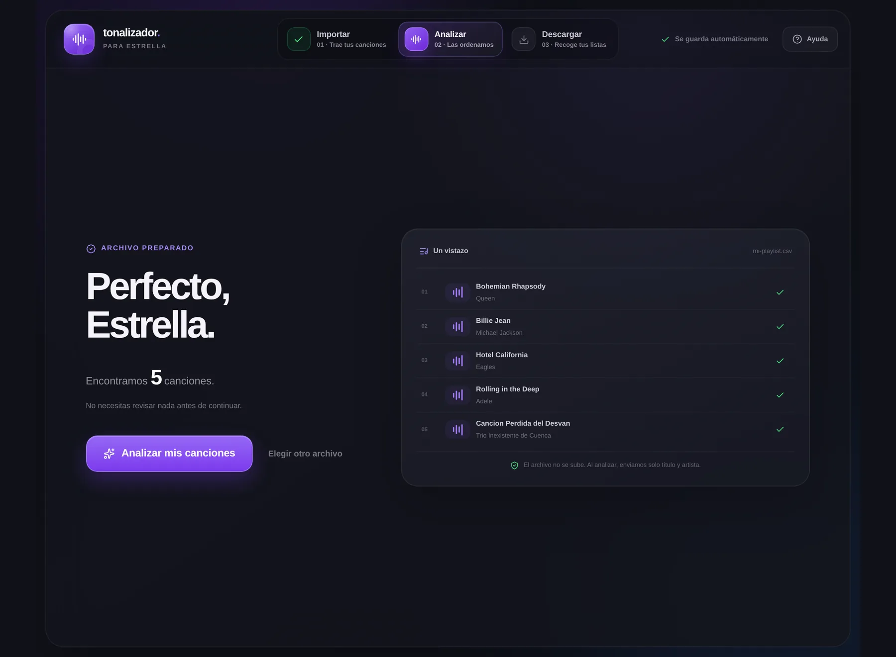
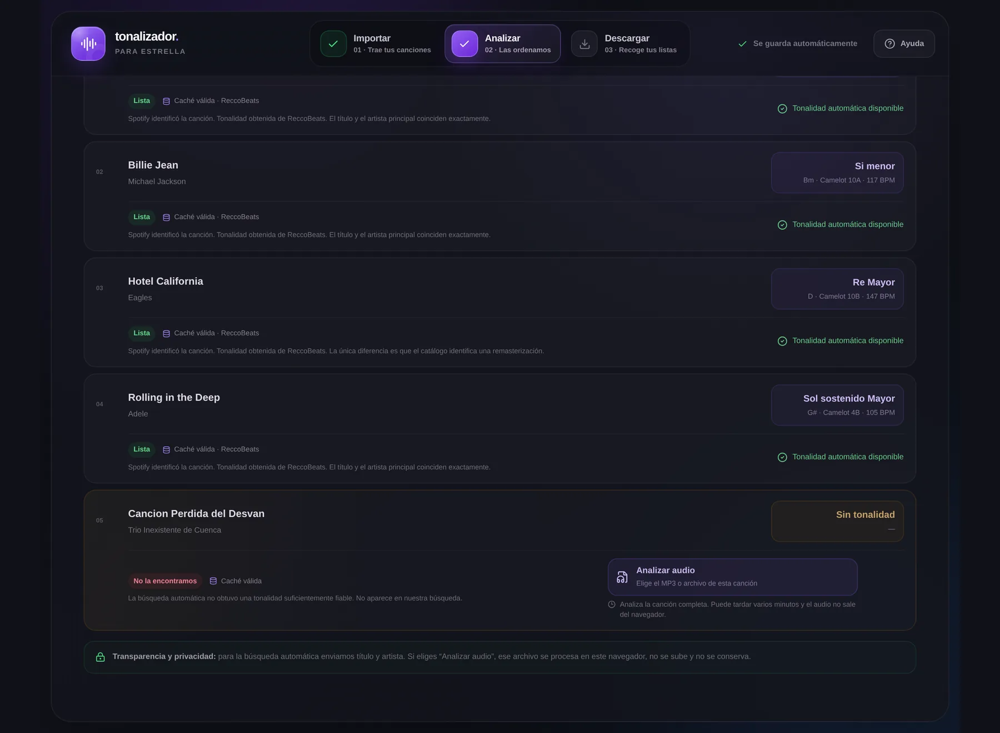
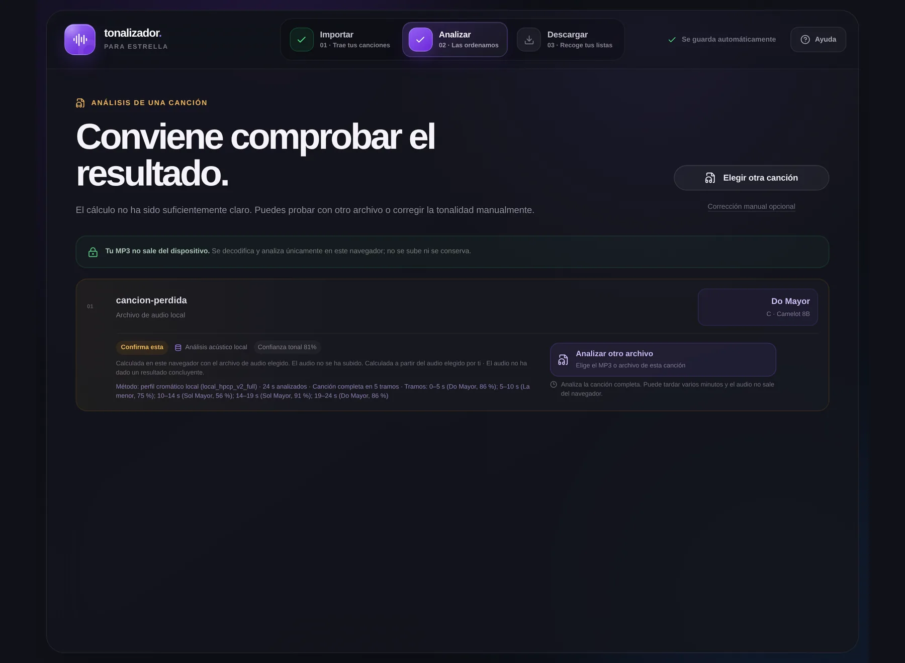
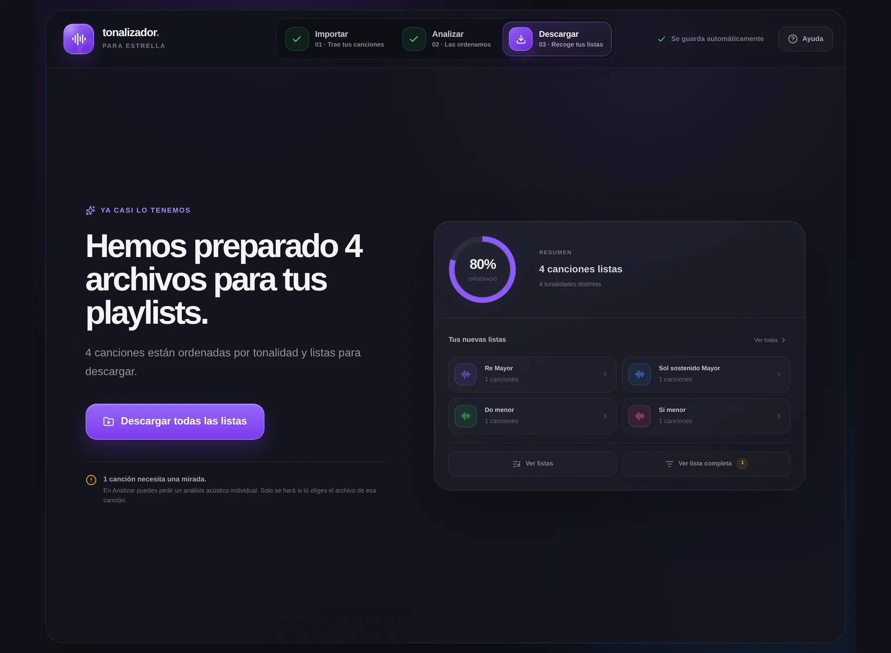

Un viaje interactivo al corazón de tu música
Cada canción está construida alrededor de una nota que actúa como su «casa»: su tonalidad. Tonalizador la encuentra por ti; esta experiencia te enseñará a comprenderla: qué es, cómo la siente tu oÃdo sin que lo sepas, cómo la calcula una máquina y por qué, a veces, la respuesta más honesta es «no lo sé». Al final no habrás aprendido solo una herramienta: habrás aprendido a mirar la música por dentro.
Sin instalar nada · El sonido se genera en tu navegador · 17 experimentos interactivos
Esta constelación no es un adorno: son las doce notas de toda la música, orbitando una estrella dorada — la nota‑hogar. Los hilos son la gravedad que tu oÃdo siente en cada canción, aunque nadie te la haya enseñado. Pulsa «Escuchar una tonalidad» y mira encenderse las notas que suenan. Aprender a ver esa gravedad — y cómo una máquina la mide — es este viaje.
01 · El punto de partida
Imagina tu playlist favorita: cientos de canciones acumuladas durante años. Suenan bien de una en una. Pero encadenadas al azar, algo chirrÃa: una canción luminosa choca contra una sombrÃa, una entrada brusca rompe el hechizo de la anterior.
Los DJ profesionales conocen el secreto desde hace décadas: dos canciones suenan bien seguidas cuando sus tonalidades son compatibles. El problema es que averiguar la tonalidad de una sola canción a oÃdo exige años de entrenamiento musical. Hacerlo con trescientas llevarÃa semanas.
Tonalizador es como una persona muy ordenada delante de un cesto enorme de ropa mezclada: va sacando prenda a prenda y forma montones etiquetados — blancas aquÃ, oscuras allá, delicadas aparte. El cesto es tu playlist; los montones, las tonalidades.
Experimento 1 · Escucha la diferencia
Dos maneras de encadenar las mismas tres canciones. Pulsa cada botón y fÃjate en cómo aterriza cada transición. No hace falta saber nada: tu oÃdo decidirá solo.
Lo que acabas de notar —esa sensación de choque o de continuidad— es exactamente el fenómeno que Tonalizador convierte en algo medible. El resto de este viaje explica cómo.
¿Por qué tu oÃdo, sin ninguna formación musical, ya distingue una transición suave de un choque? ¿Qué sabe tu cerebro que tú todavÃa no sabes que sabe?
02 · La idea central
Casi toda la música que conoces está construida alrededor de una nota principal. La melodÃa sale de paseo — sube, baja, se aleja — pero siempre tiende a volver a esa nota, como quien vuelve a casa al final del dÃa. Esa nota-hogar, junto con su «estado de ánimo», es la tonalidad.
No es una convención arbitraria: es un fenómeno de la percepción. Tu cerebro lleva toda la vida escuchando música organizada asÃ, y ha aprendido a sentir una fuerza de gravedad silenciosa que tira de las melodÃas hacia su centro. Cuando una canción termina en su nota-hogar, sientes reposo. Cuando se detiene en otra, sientes que algo quedó… suspendido en el aire.
Piensa en el color dominante de una habitación. Puede haber decenas de objetos, pero casi siempre dices «esta habitación es azul». Con las canciones pasa igual: aunque usen muchas notas, hay una que domina. Decir «esta canción está en Do» es decir «esta habitación es azul».
Experimento 2 · Siente la gravedad musical
Una misma melodÃa, dos finales. En el primero, la melodÃa vuelve a casa. En el segundo, se queda a un solo paso de la puerta… y no entra.
El teclado también es tuyo: pulsa cualquier tecla para oÃrla. La tecla dorada es la nota-hogar (Do). FÃjate en cómo la penúltima nota del «final suspendido» — Si, justo al lado de casa — genera una tensión casi fÃsica. Los músicos la llaman sensible: la nota que siente la cercanÃa del hogar.
Si nadie te enseñó a sentir esa gravedad… ¿de dónde salió? ¿Está en la fÃsica del sonido, en tu cultura, o en la conversación de siglos entre ambas?
03 · Los dos estados de ánimo
Cada nota-hogar puede sostener dos «climas» distintos. El modo Mayor suena luminoso, abierto, festivo. El modo menor suena Ãntimo, serio, melancólico. La diferencia técnica es diminuta — un par de notas de la escala bajan medio escalón — pero el efecto emocional es enorme.
Por eso los resultados del Tonalizador dicen cosas como «Re Mayor» o «Do menor»: primero la nota-hogar (Re, Do…), después el estado de ánimo. Doce notas posibles × dos modos = 24 tonalidades. Ese es el mapa completo en el que vive prácticamente toda la música popular.
Experimento 3 · El interruptor del clima
La misma melodÃa, nota por nota, en los dos modos. Solo cambian dos notas. Escucha lo que le ocurre a la emoción.
Modo Mayor: las notas tercera y sexta de la escala están en su posición «alta». La luz entra de lleno.
Mayor y menor son la misma fotografÃa revelada dos veces: una a pleno sol y otra en un dÃa nublado. El paisaje no cambia — cambia la luz que lo atraviesa.
¿Por qué medio escalón de diferencia en dos notas puede cambiar la emoción de una pieza entera? Nadie tiene una respuesta completa. Tu oÃdo, sin embargo, la aplica sin dudar.
04 · El material de construcción
De las doce notas que existen, cada tonalidad elige siete y las trata como su familia. Esa selección se llama escala. Las canciones en esa tonalidad usan sobre todo esas siete notas; las otras cinco aparecen solo de visita, como invitadas que dan color.
Lo asombroso es que la receta de la selección es siempre la misma. Para el modo Mayor: empezar en la nota-hogar y avanzar con este patrón de pasos — dos grandes, uno pequeño, tres grandes, uno pequeño. Cambia la nota de partida y la receta produce una familia distinta, pero con el mismo aire de familia. Por eso existen exactamente doce escalas Mayores y doce menores: una por cada punto de partida posible.
Experimento 4 · Construye tu propia escala
Elige una nota-hogar y un modo. La receta hace el resto: las teclas de la familia se iluminan y puedes escucharla subir.
Dorado = nota-hogar · Azul = resto de la familia. Observa que al cambiar de tonalidad el dibujo se desplaza, pero la distancia entre las notas — la receta — no cambia nunca. Este detalle será crucial cuando veamos cómo «piensa» el algoritmo: reconocer una tonalidad es reconocer ese dibujo, esté donde esté.
Si la receta es idéntica y solo cambia el punto de partida, ¿qué hace entonces «especial» a cada tonalidad? ¿Y qué tendrÃa que mirar una máquina para averiguar cuál se está usando?
05 · Vecindarios sonoros
Las 24 tonalidades no son islas: algunas comparten casi toda su familia de notas, y por eso pasar de una a otra suena natural. A finales de los noventa se popularizó una forma brillante de dibujar esos parentescos: colocarlas en una rueda como la esfera de un reloj.
Cada tonalidad recibe un código: un número del 1 al 12 más una letra — B para las Mayores (anillo exterior), A para las menores (anillo interior). Y la regla de oro cabe en una frase: dos canciones combinan bien si sus códigos son iguales o vecinos — el mismo número con la otra letra, o el número de al lado con la misma letra. Es el truco que los DJ llaman mezcla armónica.
Cada canción es una pieza de puzle y su código Camelot dibuja la forma de sus bordes. Dos piezas con bordes compatibles encajan sin forzar; dos incompatibles chirrÃan aunque las aprietes.
Experimento 5 · Explora la rueda
Toca cualquier casilla. Se iluminarán sus tres vecinas compatibles y podrás escuchar cómo suena esa tonalidad y cómo aterriza un salto compatible… o uno incompatible.
Tonalidad seleccionada
Elige una casilla
La rueda entera está a un toque de distancia.
Este es exactamente el tercer «idioma» en que Tonalizador te da cada resultado: Do menor · Cm · 5A son tres nombres de la misma casa — en la tradición española, en la notación internacional y en el reloj de los DJ.
La rueda no la inventó la naturaleza: la inventaron personas buscando una forma de ver un parentesco que el oÃdo ya sentÃa. ¿Cuántas herramientas conoces que sean, en el fondo, eso — una manera de ver lo invisible?
06 · La estrategia
Aquà llega la primera sorpresa: para averiguar la tonalidad de tu playlist, Tonalizador no empieza escuchando la música. Empieza haciendo lo que harÃa una persona sensata ante una duda: consultar. Primero sus apuntes, luego los libros, y solo al final el experimento.
Para cada canción recorre una cadena de cuatro estaciones, y se detiene en cuanto obtiene una respuesta fiable: la memoria compartida (¿alguien preguntó ya por esta canción?), la identificación en el catálogo de Spotify (¿qué grabación exacta es?), la ficha musical de ReccoBeats (¿en qué tono está esa grabación?) y, como último recurso y solo si tú lo pides, el análisis acústico local: escuchar de verdad el archivo, dentro de tu propio dispositivo.
Experimento 6 · Sigue el viaje de una canción
Elige una canción (son los casos reales con los que se probó la herramienta en producción) y observa cómo recorre la cadena. Prueba la misma canción dos veces: la segunda vez la memoria responderá al instante.
¿Por qué ese orden? Por eficiencia y por honestidad. La memoria es instantánea y evita repetir trabajo. El catálogo es rápido y contrastado. Y el análisis acústico —lo más lento y costoso— queda como el especialista al que solo se acude cuando el historial no aclara el caso. Cada estación anota además qué hizo y por qué: al final, cada resultado lleva su recibo.
¿En qué otros problemas de tu vida aplicas —sin darte cuenta— esta misma cadena: memoria, consulta, experimento?
07 · El detalle que lo cambia todo
Una misma canción puede existir en muchas encarnaciones: la de estudio, la del directo, un remix, una versión acústica, una regrabación décadas después. Y cada una puede estar en un tono distinto. Por eso identificar la grabación exacta no es un tecnicismo: es la diferencia entre acertar y equivocarse con total seguridad.
Pedir «leche» al supermercado no basta: ¿entera, desnatada, sin lactosa? Tonalizador es un repartidor escrupuloso: si no está seguro de qué versión exacta pides, prefiere preguntarte antes que traerte la equivocada.
Experimento 7 · Tú eres el algoritmo
Tu playlist dice una cosa; el catálogo ofrece candidatas. ¿DejarÃas pasar cada caso automáticamente, o lo mandarÃas a revisión? Decide y compara con las reglas reales de la herramienta.
Las reglas reales son deliberadamente prudentes: una coincidencia exacta de tÃtulo y artista continúa; una remasterización claramente equivalente (la misma grabación con el sonido pulido) también; pero directos, remixes, versiones acústicas y covers nunca pasan solos — van a la lista de revisión, donde la última palabra es tuya. Es el primer principio de diseño de la herramienta: mejor decir «no lo sé» que equivocarse en silencio.
Un dato erróneo colocado con aplomo es más peligroso que un hueco visible. ¿Dónde más — noticias, medicina, inteligencia artificial — te gustarÃa que las máquinas practicaran esta forma de humildad?
08 · El corazón del algoritmo
Y cuando ninguna fuente responde, llega el momento más fascinante: darle a la máquina el archivo de audio y pedirle que lo escuche. Pero una máquina no tiene oÃdos. Tiene algo distinto — y sorprendentemente parecido a lo que hace tu cerebro sin contártelo.
El procedimiento, que ocurre Ãntegro dentro de tu navegador (el archivo jamás se sube a internet), tiene tres movimientos: pesar, comparar y dudar con elegancia. Primero recorre la canción midiendo cuánto «pesa» cada una de las doce notas — cuánta presencia acumula cada una, suene en la octava que suene. El resultado es una huella de doce barras: el perfil cromático. Después compara esa huella con los patrones tÃpicos de las 24 tonalidades. Y por último se pregunta: ¿ha ganado alguien con claridad… o ha sido un final de foto?
Es el trabajo de un perito de huellas: la canción deja una huella de doce crestas, el archivo policial contiene 24 fichas conocidas, y gana la ficha que mejor encaja. Pero un buen perito nunca dice solo «es esta»: dice cuánto se parece, y si la segunda candidata estaba peligrosamente cerca.
Experimento 8 · El laboratorio en vivo
Elige una «canción» sintetizada y mira el algoritmo trabajar por dentro, paso a paso, con sonido real generado en tu navegador. (Es una simulación didáctica fiel del método local_hpcp_v2 de la herramienta: mismos perfiles tonales, misma fórmula de confianza.)
La confianza no es una corazonada: es una fórmula con cuatro ingredientes pesados. Estos son los valores de tu análisis:
FÃjate en el último ingrediente: la canción se analiza entera, troceada en tramos, y se comprueba si todos los tramos votan a la misma ganadora. Si la confianza final no alcanza el umbral (62%), el resultado se muestra igualmente — pero marcado como dudoso, y no entra en las listas descargables sin tu permiso. La duda, aquÃ, no es un fallo: es una prestación.
La máquina no «oye» música: cuenta, pesa y compara. Y sin embargo llega a menudo a la misma conclusión que tu oÃdo. ¿Significa eso que tu cerebro también cuenta, pesa y compara… sin pedirte permiso?
09 · Alfabetización de datos
Cuando Tonalizador termina, junto a cada canción aparece una ficha. Nada en ella es decorativo: cada campo responde a una pregunta concreta. Aprender a leerla es aprender a distinguir qué te dice la herramienta de cuánto deberÃas fiarte.
Experimento 9 · Explora la ficha
Esta es una ficha real de las pruebas en producción. Toca cada campo para descubrir qué significa y por qué existe.
LAS 12
Análisis del 29 de julio de 2026 · fila de la tabla «Analizar»
Cada dato tiene una historia detrás: de dónde salió, qué significa y qué no significa.
Hay un matiz que merece un momento de atención: la ficha contiene dos confianzas distintas, y conviene no mezclarlas. La confianza de identificación mide la seguridad de haber encontrado la grabación correcta. La confianza tonal mide la seguridad sobre la tonalidad misma. Como en una biblioteca: puedes estar segurÃsimo de haber cogido el libro correcto y aun asà dudar del idioma de uno de sus capÃtulos. Y cuando una fuente no proporciona confianza tonal, Tonalizador muestra «sin dato» — nunca se inventa un porcentaje.
¿Cuántas herramientas que usas a diario te dicen no solo la respuesta, sino de dónde la sacaron y cuánto dudan de ella? ¿Cómo cambiarÃa tu relación con la tecnologÃa si todas lo hicieran?
10 · Donde el mapa se difumina
Hay canciones que se resisten a una etiqueta única, y no por capricho: la ambigüedad está en la propia música. Conocer estos casos te convierte en mejor lector de resultados que la mayorÃa de usuarios de cualquier detector de tonalidad.
El primer caso es un clásico: cada tonalidad Mayor tiene una «prima hermana» menor que usa exactamente las mismas siete notas — solo cambia cuál actúa de hogar. Do Mayor y La menor comparten la familia entera. Para distinguirlas no basta con pesar las notas: hay que fijarse en cuál manda, cuál abre y cierra las frases. A veces ni los músicos se ponen de acuerdo.
Experimento 10 · Las primas hermanas
Dos progresiones con las mismas siete notas de familia. Escúchalas: una siente su hogar en Do (luminosa), la otra en La (melancólica). Debajo, sus perfiles de notas: casi gemelos. Por eso el algoritmo mide la ventaja sobre la segunda candidata — y cuando es escasa, lo confiesa.
Do – Fa – Sol – Do
Lam – Fa – Sol – Lam
¿Ves lo parecidas que son las dos huellas? La diferencia decisiva no está en qué notas suenan sino en cómo se reparten el protagonismo. En la rueda Camelot, además, son vecinas directas: 8B y 8A. La ambigüedad tiene hasta dirección postal.
El segundo caso son las canciones que se mudan. Algunas piezas cambian de tonalidad a mitad de camino — los músicos lo llaman modular. El ejemplo canónico es Bohemian Rhapsody: atraviesa varios barrios tonales en seis minutos. Para estos casos, el resultado del Tonalizador indica la tonalidad predominante global: utilÃsima para clasificar, pero no es un análisis musicológico de cada sección.
Experimento 11 · Una canción que se muda de casa
Abajo tienes una canción entera, del primer segundo al último, estirada como una tira de tiempo. Cada bloque es un tramo de la canción, y su color te dice en qué tonalidad suena ese tramo. Es una versión simplificada de Bohemian Rhapsody. Tócalos de izquierda a derecha, como si escucharas la canción, y fÃjate en cuándo cambia el color.
↠desliza la barra para recorrer la canción entera →
¿Y las canciones que quedan «sin clasificar»? Son el sistema funcionando bien. Si ninguna fuente automática dio un dato fiable —canción poco documentada, versión rara, ediciones demasiado parecidas— la herramienta prefiere el hueco visible al error invisible. Para esas canciones tienes dos salidas: el análisis acústico del archivo, o la corrección manual si tú conoces el tono.
Un mapa que dibuja nÃtidos los territorios difusos no es un buen mapa: es un mapa que miente bonito. ¿Prefieres las herramientas que te enseñan sus zonas borrosas, o las que las esconden?
11 · Canciones que ya conoces
Hasta aquà todo han sido escalas, ruedas y perfiles. Es hora de mirar canciones de verdad. Estas cinco no las he elegido al azar: son exactamente las que se usaron para probar el Tonalizador en producción, y los datos que verás son los resultados reales que devolvió la herramienta.
MÃralas con lo que ya sabes. Cada una tiene su nota-hogar, su estado de ánimo y su dirección en la rueda. Y entre ellas hay parentescos que tu oÃdo reconocerá en cuanto los escuche.
Experimento 12 · La sesión imposible
Pon una canción en el plato. Debajo aparecerá qué otras encajan con ella según la regla de la rueda — y podrás escuchar cada transición para comprobarlo con el oÃdo, no con la teorÃa.
FÃjate en lo que aparece ahÃ: Billie Jean (10A) y Hotel California (10B) son la misma familia de notas con distinto jefe — relativas, primas hermanas. Y Rolling in the Deep (4B) con Smells Like Teen Spirit (3B) son vecinas de número. Cuatro canciones de cuatro décadas y cuatro géneros distintos que, sin haberlo acordado jamás, viven puerta con puerta.
La excepción es Bohemian Rhapsody: su 5A no encaja con ninguna de las otras. Y tiene todo el sentido, porque su tonalidad global es el resumen de una canción que se muda de casa varias veces. El dato no es falso: simplemente no cuenta toda la historia. Ya sabes leerlo asÃ.
Experimento 13 · El truco de los cuatro acordes
Existe una secuencia de cuatro acordes que sostiene centenares de canciones populares. Escúchala aquà y después múdala de casa: comprobarás que la sensación no depende de la tonalidad elegida, sino de las distancias entre sus acordes — la misma receta del capÃtulo 4.
Cada acorde se ilumina cuando suena. Cambia de tonalidad y vuelve a escuchar: cambian todas las notas, una por una, y sin embargo la historia que cuentan es exactamente la misma.
Si una misma secuencia de distancias puede sostener un himno de estadio y una nana, ¿qué es entonces lo que hace única a una canción? Quizá la tonalidad sea solo el escenario — y lo demás, la melodÃa, la voz, el silencio, la función que se representa en él.
12 · Manos a la obra · Manual de usuario
Con todo lo que ya comprendes, usar la herramienta es casi un trámite. Asà que, en lugar de un manual para leer, aquà tienes una misión para jugar: ocho escenas con capturas reales de tonalizador.xosemiguel.eu, tomadas durante un análisis auténtico de cinco canciones — cuatro clásicos y una inventada, para que veas también qué pasa cuando algo no se encuentra. En cada escena, explora los puntos luminosos sobre la propia pantalla y supera un pequeño reto. Al final habrás usado la app entera… sin haberla abierto todavÃa.
Misión guiada · La app real, escena a escena




Tonalizador necesita la lista de tus canciones — no la música. Se consigue con TuneMyMusic (gratuito), que convierte tu playlist en un archivo CSV: el Ãndice del libro, sin los capÃtulos. (Escenas 1 y 2 de la misión.)
Elige el CSV, comprueba el recuento y pulsa «Analizar mis canciones». Cada canción recorre la cadena de fuentes del Acto III y vuelve con su recibo completo. (Escenas 3 a 7.)
Revisa el resumen — el anillo te dice qué parte quedó ordenada — y pulsa «Descargar todas las listas». (Escena 8.) Recibes un único ZIP:
¿Convertir una lista en playlist real? TuneMyMusic funciona también en sentido inverso: importa el CSV de la tonalidad elegida. Tu playlist original no se toca en ningún momento.
GuÃa rápida · Todos los estados que puede mostrar una canción
Clasificada con éxito. Verás la tonalidad en los tres idiomas, los BPM, la fuente y la explicación. Entrará en su CSV de tonalidad al descargar.
Ninguna fuente automática dio un dato fiable («No la encontramos» o «runner-up demasiado cerca»). Va a revisar.csv y solo en su fila aparece «Analizar audio». No es un fallo: es el sistema prefiriendo el hueco al error.
Resultado del análisis acústico local con su confianza tonal. Si supera el umbral entra como fiable; si no, se muestra como orientativo y espera tu confirmación. El detalle por tramos te enseña dónde dudó.
La opción «Corrección manual opcional» te deja fijar tú la tonalidad de cualquier canción. Se guarda solo en tu navegador y nunca contamina la memoria compartida de otros usuarios.
Privacidad · Qué viaja y qué no
ðŸ–¥ï¸ Se queda en tu dispositivo: el archivo CSV (se lee en tu navegador), tus archivos de audio (se analizan localmente y se descartan), tus correcciones manuales y el progreso del análisis.
🌠Viaja a internet: únicamente tÃtulos y artistas, lo mÃnimo para poder identificarlos en el catálogo. La herramienta no descarga música de ningún sitio: consulta datos sobre la música.
Tres botones por fuera, toda una filosofÃa por dentro. ¿Cuántas interfaces «simples» esconden decisiones de diseño que merecerÃan un tutorial como este?
13 · ¿Y para qué me sirve?
La tonalidad es un dato pequeño con aplicaciones sorprendentemente diversas. Estas son las más habituales — encuentra la tuya.
Ordena las canciones para que cada una encaje con la siguiente y la lista suene como un todo, sin saltos bruscos.
Cualquier personaSaber el tono te dice si una canción te vendrá cómoda o se te irá demasiado aguda o grave — antes de empezar.
Músicos y estudiantesEncadena códigos Camelot vecinos, como los DJ profesionales, para sesiones y fiestas sin choques.
DJ y aficionadosListas para estudiar, yoga o cenas donde el clima (Mayor/menor) y el pulso (BPM) se mantienen estables.
Espacios y rutinasLas canciones favoritas del alumnado, convertidas en ejemplos vivos de tonalidad, modo y parentesco armónico.
DocentesDescubrir en qué tono está esa canción que te obsesiona — incluso desde un MP3 guardado en un cajón digital.
Mentes inquietasExperimento 14 · Cabina de DJ
Está sonando la canción del disco. Elige la siguiente: solo una de las opciones respeta la regla de la rueda. Puedes escuchar la transición antes de decidir. Cinco rondas — ¿cuántas encadenas?
El mismo número —«5A»— es técnica para el DJ, comodidad para quien canta y belleza para quien estudia. Los datos no tienen un solo significado: tienen tantos como preguntas sepamos hacerles.
14 · Vacuna contra malentendidos
Toda herramienta genera mitos a su alrededor. Voltea cada tarjeta para desactivarlos uno a uno.
No descarga ni escucha nada de internet. Consulta datos sobre las canciones en catálogos. Solo «escucha» si tú le das un archivo tuyo — y entonces lo hace dentro de tu dispositivo.
Un hueco es el sistema funcionando: ninguna fuente dio un dato fiable y la herramienta prefirió confesarlo a inventar. Tienes el análisis acústico y la corrección manual como salidas.
Es un dato de catálogo de gran calidad, no un dictamen musicológico. Canciones que modulan reciben su tonalidad predominante. Por eso cada resultado muestra su fuente y admite corrección.
El análisis acústico ocurre Ãntegramente en tu navegador: el archivo no se sube, no se guarda y se descarta al terminar. Puedes comprobarlo: funciona incluso sin conexión.
Una mide si se encontró la grabación correcta; la otra, la seguridad sobre la tonalidad misma. Puedes tener la primera altÃsima y la segunda ausente — y la herramienta jamás rellena el hueco con un número inventado.
Solo lee una copia de la lista (el CSV) y produce archivos nuevos. Tu playlist original queda intacta. Importar las listas resultantes es una decisión — y un gesto — exclusivamente tuyo.
¿Notas el patrón? Casi todos los mitos nacen de no saber cómo funciona algo por dentro. La comprensión no es un lujo: es la vacuna.
15 · El reto final
Seis preguntas. No miden memoria: miden criterio — esa forma de pensar que has ido construyendo durante el viaje.
Experimento 15 · Autoevaluación con criterio
16 · El final que es un principio
Detrás de cada interfaz, de cada algoritmo y de cada resultado hay personas que observaron un problema, hicieron preguntas e imaginaron soluciones. Usar una herramienta es útil; comprenderla es participar de ese mismo proceso.
Ahora sabes qué es una tonalidad y por qué tu oÃdo la siente como un hogar. Sabes que una máquina puede encontrarla pesando doce notas y comparando huellas. Sabes por qué la herramienta consulta antes de escuchar, por qué exige identificar la grabación exacta, y por qué su gesto más valioso es admitir la duda en voz alta. Ya no dependes de instrucciones: tienes criterio. Puedes explorar, hacer preguntas nuevas y resolver problemas que nadie te ha enseñado a resolver.
La última pregunta
Toda herramienta es inteligencia humana cristalizada: detrás de cada algoritmo hay personas que observaron un problema y se atrevieron a preguntar.
Usarla es útil. Comprenderla es participar del mismo descubrimiento.
Aprender no es memorizar pasos: es construir una forma de pensar. Quien entiende el porqué deja de seguir instrucciones — y empieza a tener criterio.
Cuanto más poderosa es una herramienta, más importa comprender sus fundamentos: una respuesta vale mucho más cuando sabes cómo fue obtenida.
Las máquinas amplÃan la memoria y aceleran el cálculo. La curiosidad, la imaginación y el juicio crÃtico siguen siendo profundamente humanos.
Antes de esperar que una herramienta te dé una respuesta,
pregúntate cómo pedÃrselo para obtener lo que quieres.